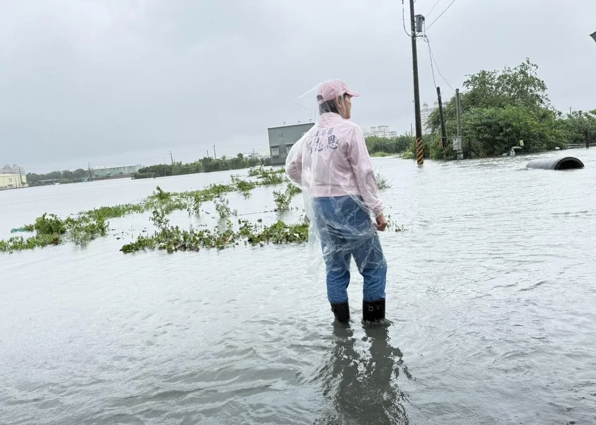
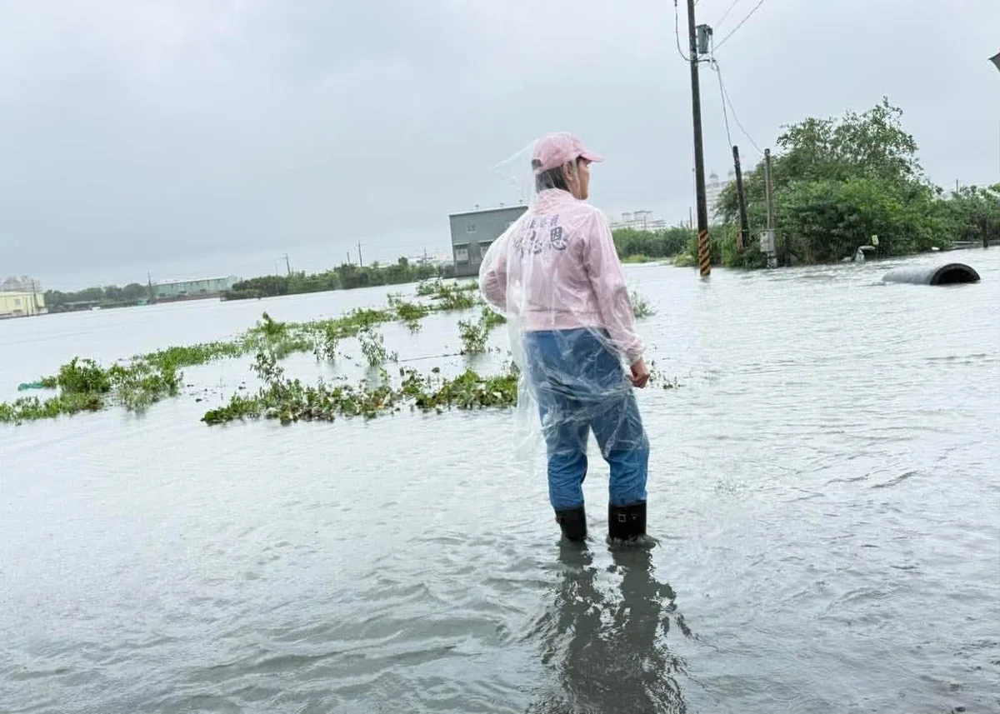
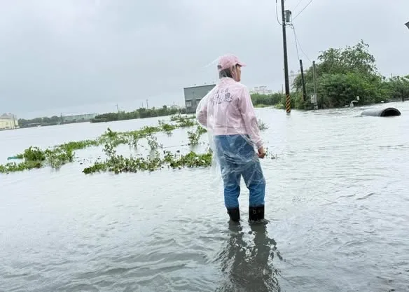
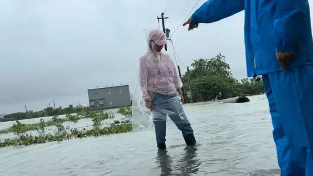
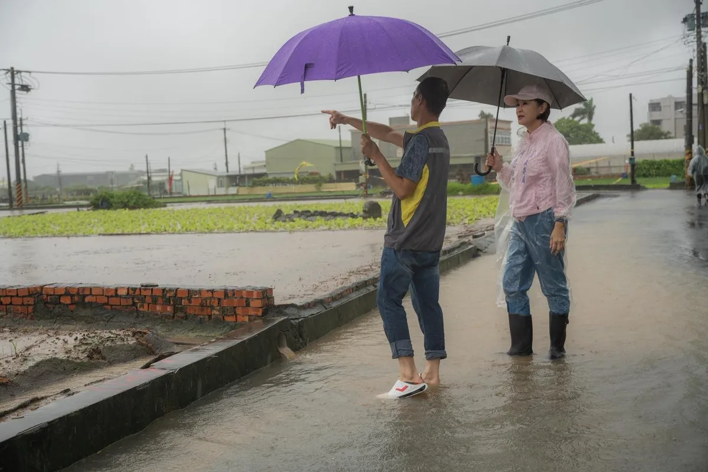

賴瑞隆zenolai
@zenolai:小港火警空品提醒！小港、大寮、鳳山、鳥松朋友請留意防護 小港區稍早發生工廠火警，消防單位正持續搶救中。預估空氣品質受影響的區域，已擴大至小港區、大寮區、鳳山區和鳥松區。 環保局正持續嚴密監測空品變化，請上述區域的市民朋友盡量待在室內、緊閉門窗，如需外出請務必戴好口罩。我會持續緊盯後續處置狀況，請大家務必注意防護和安全。高雄平安！
Posts
@zenolai:小港火警空品提醒！小港、大寮、鳳山、鳥松朋友請留意防護 小港區稍早發生工廠火警，消防單位正持續搶救中。預估空氣品質受影響的區域，已擴大至小港區、大寮區、鳳山區和鳥松區。 環保局正持續嚴密監測空品變化，請上述區域的市民朋友盡量待在室內、緊閉門窗，如需外出請務必戴好口罩。我會持續緊盯後續處置狀況，請大家務必注意防護和安全。高雄平安！

@zenolai:感謝第一線防汛人員，風雨無阻、堅守崗位，我們會繼續為市民安全全力以赴。

@zenolai:高雄市明日全區停止上班、停止上課 根據中央氣象署最新預報資料顯示，高雄市明日降雨量預估已達停班課標準。高雄市政府宣布：明（24）日高雄市全區停止上班、停止上課。 面對這兩天的強降雨，許多市民朋友關心的各大滯洪公園，都充分發揮了蓄水防洪的功效，成功減輕了市區的排水負擔。然而極端氣候的挑戰依然嚴峻，請大家外出務必注意路況和積淹水情形；居住在山區、低窪地區的朋友，也請持續留意市府發布的警戒資訊。 我們會持續做好各項防災整備，第一線防救災人員也會日夜堅守崗位。風雨還在，高雄的防線也在。請大家持續減少不必要的外出，若有災情請通報 1999，務必注意自身安全！

8月23日這天，高雄持續強降雨，各地也傳出災情。柯志恩從早上到下午一整天，從縣區跑到市區，不斷關心災情，並傾聽里長及地方鄉親的心聲。

下午來到林園西溪抽水站，查看內外水位、閘門及周邊排水情形。 西溪抽水站鄰近林園海岸，目前外水位較低，開啟閘門後，就能利用內外水位差重力排水，將水往海側排出，如遇外水較高，則依SOP操作抽水機組動力排水。 這波降雨持續時間長，現場風勢也相當強勁。感謝第一線防汛人員持續掌握水情，拜託大家盡量減少外出，外出時也請特別留意強風及道路狀況。

高雄今天大雨持續，下午我再來到 #大寮區，關心地方積淹水情況。 首先來到 #永芳里，農田積水已經漫上道路，部分路段幾乎分不清哪裡是農田、哪裡是道路。現場也有民眾誤闖積水區，造成車輛拋錨。簡基成里長無奈說，這樣的情況已經持續很久，每逢豪雨就容易淹水，甚至還得經常提醒外地民眾不要誤闖。 對大寮人來說，這樣的淹水情況，已經困擾大家很久了。每逢豪雨，就要擔心農田、道路，甚至自己的生活會不會受到影響。我認為，這不該再繼續下去。 現場我也立即請議員團隊向市警局反映，積水路段的封鎖線與警示標誌應更加清楚，避免民眾誤闖。至於長期的排水問題，後續我會向中央 #農田水利署 反映地方需求，也請大寮、林園的市議員向 #市府水利局 了解，針對農田排水、農路以及周邊水路系統進行通盤檢視，找出問題、提出改善方案，而不是每次下大雨才來處理。 接著我也來到 #大寮里，與蕭清翔里長關心當地積淹水狀況。不少道路仍泡在水中，也再次提醒大家，遇到積淹水路段千萬不要冒險通行，安全最重要。 雨還沒停，防汛就不能鬆懈；但雨停之後，這些長期困擾大寮人的問題，也不能再船過水無痕。 大寮人不該每逢豪雨，就一次次面對同樣的淹水困境。這些問題既然存在這麼久，就應該好好面對、設法解決，讓淹水不再成為大寮人的日常。 根據氣象署預告，今晚入夜後到明天上午8點，定量降水資料顯示仍有一波持續性強降雨，請大家一定要特別小心，留意最新雨勢與警戒資訊，做好防汛準備。 黃天煌 高雄市議員 邱于軒 王耀裕市議員

面對強降雨，從滯洪、抽水到水位，都要仔細確認，把每一個環節顧好。謝謝第一線人員在風雨中堅守崗位！

因應持續降雨，高雄市豪雨災害應變中心今日13時起提升為一級開設，我也持續勘查各地水情，防汛不能鬆懈，請大家注意安全！


早上結束海線行程後，我前往 #鼓山 關心災情。豪雨造成鼓山三路靠近桃子園路一帶再度出現黃泥水淹沒路面的情況，影響居民通行。從昨天到今天，類似狀況一再發生，居民也已不堪其擾。 這個地區，我的團隊與蔡金晏、白喬茵議員去年就曾多次會勘並積極爭取設置沉砂滯洪池。凱米、山陀兒颱風期間，因軍方老舊圍牆破損，柴山坡地的黃泥水在豪雨時越區溢淹至美術館周邊。目前已完成843公尺擋土牆重建，改善越區漫淹問題。 但山坡地大量逕流的問題仍未徹底解決。未來將在營區內新設6處攔砂壩及2處沉砂滯洪池，預計今年12月底完工。我也會持續要求國軍做好營區內水土保持，在工程完成前做好應變，避免每逢豪雨就讓泥水再次衝進市區。 根據水利局智慧監測平台，從昨夜到今日，高雄多處傳出積淹水情況。面對後續雨勢，希望能持續精進監測與應變機制，針對容易積淹水的熱點加強抽排水與預警，讓防汛工作更即時、更周全，盡可能降低雨勢對市民生活的影響。 治水不能只看工程有沒有完成，更要看雨來的時候，居民的生活有沒有受到影響。面對極端降雨越來越頻繁，高雄需要把每一次災情都當成檢視治水系統的機會，找出問題、補上缺口。 #高雄 #平安
近日高雄連日大雨，今天早上趕往 #橋頭、#梓官 幾處容易積淹水的地區，了解抽水、排水及現場情況，也關心鄉親安全。橋頭典寶溪抽水站持續抽水，梓官大舍甲清晨5點多仍有淹水，到場時部分路段還拉著封鎖線；蚵仔寮也有許多鄉親在家門口堆放沙包、裝設防水閘門，提前防範積淹水。 目前高雄部分地區仍有積水，接下來雨勢還可能持續兩天。提醒地勢低窪的地區，都務必提高警覺，提前做好防水準備。 面對地方長期積淹水問題，後續也會持續彙整現場情況與鄉親反映，積極與水利、地方政府及相關單位溝通，尋求更完善、有效的改善方法，從抽水、排水到整體防洪設施逐步檢討，降低未來豪雨對居民生活的影響。 雨還沒停，防汛就不能鬆懈。請大家持續留意雨勢與相關警戒，非必要不要涉水、不要冒險外出，大家務必小心，平安度過這波豪雨。 #高雄 #平安

@prof.kochihen:今天一整天，我走進淹水的災區、傾聽鄉親的心聲，並將地方的需求反映給中央、地方政府。 發現問題、討論解方，才能讓淹水不再是高雄人的日常。


@chen_tingfei:台南明（8/24）日再度停止上班、停止上課。 連日豪雨，台南多處積淹水，接下來仍可能有大雨、局部豪雨及短延時強降雨。 提醒大家，明天如果非必要請盡量避免外出，遠離積淹水及危險區域，也請大家做好防雨、防淹水準備。 目前最重要的，就是守護大家的安全，也一起努力讓受災的家園盡快恢復。 天雨路滑，大家平安最重要！ #陳亭妃 #台南

@zenolai:下午來到林園西溪抽水站，查看內外水位、閘門及周邊排水情形。 西溪抽水站鄰近林園海岸，目前外水位較低，開啟閘門後，就能利用內外水位差重力排水，將水往海側排出，如遇外水較高，則依SOP操作抽水機組動力排水。 這波降雨持續時間長，現場風勢也相當強勁。感謝第一線防汛人員持續掌握水情，拜託大家盡量減少外出，外出時也請特別留意強風及道路狀況。

對於海佃路爆炸事件的受災戶，目前最關鍵的除了市政府協助集體訴訟代位求償，另外就是需要中央政府協調公股銀行低利貸款協助家園重修經費。 我已向行政院積極爭取，以減輕受災戶的經濟負擔，加快家園重建的速度。 #陳亭妃 #海佃路爆炸 #災後重建 #台南

@prof.kochihen:高雄今天大雨持續，下午我再來到大寮區，關心地方積淹水情況。 首先來到永芳里，農田積水已經漫上道路，部分路段幾乎分不清哪裡是農田、哪裡是道路。現場也有民眾誤闖積水區，造成車輛拋錨。簡基成里長無奈說，這樣的情況已經持續很久，每逢豪雨就容易淹水，甚至還得經常提醒外地民眾不要誤闖。 對大寮人來說，這樣的淹水情況，已經困擾大家很久了。每逢豪雨，就要擔心農田、道路，甚至自己的生活會不會受到影響。我認為，這不該再繼續下去。 現場我也立即請議員團隊向市警局反映，積水路段的封鎖線與警示標誌應更加清楚，避免民眾誤闖。至於長期的排水問題，後續我會向中央 #農田水利署 反映地方需求，也請大寮、林園的市議員向 #市府水利局 了解，針對農田排水、農路以及周邊水路系統進行通盤檢視，找出問題、提出改善方案，而不是每次下大雨才來處理。 接著我也來到大寮里，與蕭清翔里長關心當地積淹水狀況。不少道路仍泡在水中，也再次提醒大家，遇到積淹水路段千萬不要冒險通行，安全最重要。 雨還沒停，防汛就不能鬆懈；但雨停之後，這些長期困擾大寮人的問題，也不能再船過水無痕。

高雄今天大雨持續，下午我再來到 #大寮區，關心地方積淹水情況。 首先來到 #永芳里，農田積水已經漫上道路，部分路段幾乎分不清哪裡是農田、哪裡是道路。現場也有民眾誤闖積水區，造成車輛拋錨。簡基成里長無奈說，這樣的情況已經持續很久，每逢豪雨就容易淹水，甚至還得經常提醒外地民眾不要誤闖。 對大寮人來說，這樣的淹水情況，已經困擾大家很久了。每逢豪雨，就要擔心農田、道路，甚至自己的生活會不會受到影響。我認為，這不該再繼續下去。 現場我也立即請議員團隊向市警局反映，積水路段的封鎖線與警示標誌應更加清楚，避免民眾誤闖。至於長期的排水問題，後續我會向中央 #農田水利署 反映地方需求，也請大寮、林園的市議員向 #市府水利局 了解，針對農田排水、農路以及周邊水路系統進行通盤檢視，找出問題、提出改善方案，而不是每次下大雨才來處理。 接著我也來到 #大寮里，與蕭清翔里長關心當地積淹水狀況。不少道路仍泡在水中，也再次提醒大家，遇到積淹水路段千萬不要冒險通行，安全最重要。 雨還沒停，防汛就不能鬆懈；但雨停之後，這些長期困擾大寮人的問題，也不能再船過水無痕。 大寮人不該每逢豪雨，就一次次面對同樣的淹水困境。這些問題既然存在這麼久，就應該好好面對、設法解決，讓淹水不再成為大寮人的日常。 根據氣象署資訊，今晚入夜後到明天上午，仍有一波持續性強降雨，請大家一定要特別小心，留意最新雨勢與警戒資訊，做好防汛準備。 黃天煌 高雄市議員 邱于軒 王耀裕市議員

面對強降雨，從滯洪、抽水到水位，都要仔細確認，把每一個環節顧好。謝謝第一線人員在風雨中堅守崗位！

因應持續降雨，高雄市豪雨災害應變中心今日13時起提升為一級開設，我也持續勘查各地水情，防汛不能鬆懈，請大家注意安全！

早上結束海線行程後，我前往 #鼓山 關心災情。豪雨造成鼓山三路靠近桃子園路一帶再度出現黃泥水淹沒路面的情況，影響居民通行。從昨天到今天，類似狀況一再發生，居民也已不堪其擾。 這個地區，我的團隊與蔡金晏、白喬茵議員去年就曾多次會勘並積極爭取設置沉砂滯洪池。凱米、山陀兒颱風期間，因軍方老舊圍牆破損，柴山坡地的黃泥水在豪雨時越區溢淹至美術館周邊。目前已完成843公尺擋土牆重建，改善越區漫淹問題。 但山坡地大量逕流的問題仍未徹底解決。未來將在營區內新設6處攔砂壩及2處沉砂滯洪池，預計今年12月底完工。我也會持續要求國軍做好營區內水土保持，在工程完成前做好應變，避免每逢豪雨就讓泥水再次衝進市區。 根據水利局智慧監測平台，從昨夜到今日，高雄多處傳出積淹水情況。面對後續雨勢，希望能持續精進監測與應變機制，針對容易積淹水的熱點加強抽排水與預警，讓防汛工作更即時、更周全，盡可能降低雨勢對市民生活的影響。 治水不能只看工程有沒有完成，更要看雨來的時候，居民的生活有沒有受到影響。面對極端降雨越來越頻繁，高雄需要把每一次災情都當成檢視治水系統的機會，找出問題、補上缺口。 #高雄 #平安

有關安南區海佃路二段空地爆炸情形，今天一早亭妃就幫忙安置地點安排、國軍協助整理家園、電力回覆等等緊急處理事項，明天國軍還會繼續協助家園整理。 目前檢調針對整個案件在調查當中，基於偵查不公開的原則，市長也允諾要協助代位求償，為了讓大家可以重建家園，會先幫忙緊急處理費。 另外社會局還有社會慰助金，亭妃也已經向行政院報告，因為這一次房子受損狀況非常嚴重，若有需要貸款重建，公股銀行應該給予低利幫忙，加快民眾恢復家園重建的速度。 #陳亭妃 #安南區 #火災 #災後重建

@prof.kochihen:大寮永芳里淹成一片汪洋，我將向中央農田水利署反映問題，也請大寮的議員團隊向高雄市水利局了解情況。 針對農田、農路，以及周邊水路系統找出問題、提出解決方案，讓淹水不再成為大寮人的日常。

@zenolai:在離開西溪抽水站後，接續前往大寮上寮排水、林園排水匯流處，勘查河道排水情形及後續改善工程。 該工程規劃將匯合口河道由20公尺拓寬至25公尺，改善範圍約1公里，沿線4座橋梁也會配合調整，總經費6.5億元。完工後可進一步降低水位，改善上寮地區積淹水問題。 面對極端氣候下愈來愈頻繁的強降雨與長時間降雨，我們持續從滯洪、抽排、河道拓寬到排水匯流進行整體改善。未來我也會繼續爭取預算，提升高雄的城市韌性。
@prof.kochihen:大寮永芳里淹成一片汪洋，我將向中央農田水利署反映問題，也請大寮的議員團隊向高雄市農田水利局了解情況。 針對農田、農路，以及周邊水路系統找出問題、提出解決方案，讓淹水不再成為大寮人的日常。

下午來到林園西溪抽水站，查看內外水位、閘門及周邊排水情形。 西溪抽水站鄰近林園海岸，目前外水位較低，開啟閘門後，就能利用內外水位差重力排水，將水往海側排出，如遇外水較高，則依SOP操作抽水機組動力排水。 這波降雨持續時間長，現場風勢也相當強勁。感謝第一線防汛人員持續掌握水情，拜託大家盡量減少外出，外出時也請特別留意強風及道路狀況。

大寮永芳里淹成一片汪洋，柯志恩：治水不能只停留在預算數字。立即向中央及地方政府反映，讓淹水不再成為大寮人的日常。#柯志恩 #淹水 #高雄 #大寮 #勘災

@prof.kochihen:下午來到大寮區永芳里，農田的水已經漫至道路，現場狀況非常嚴重。 地方鄉親也反映，永芳里鄰近的農路及周邊排水問題並非第一次發生，每逢強降雨就容易淹水。 提醒大家，該路段嚴重積淹水，切勿駕駛汽機車通行，務必注意安全！

@zenolai:面對強降雨，從滯洪、抽水到水位，都要仔細確認，把每一個環節顧好。謝謝第一線人員在風雨中堅守崗位！

@prof.kochihen:早上結束海線行程後，我前往鼓山關心災情。豪雨造成鼓山三路靠近桃子園路一帶再度出現黃泥水淹沒路面的情況，影響居民通行。從昨天到今天，類似狀況一再發生，居民也已不堪其擾。 這個地區，我的團隊與蔡金晏、白喬茵議員去年就曾多次會勘並積極爭取設置沉砂滯洪池。凱米、山陀兒颱風期間，因軍方老舊圍牆破損，柴山坡地的黃泥水在豪雨時越區溢淹至美術館周邊。目前已完成843公尺擋土牆重建，改善越區漫淹問題。 但山坡地大量逕流的問題仍未徹底解決。未來將在營區內新設6處攔砂壩及2處沉砂滯洪池，預計今年12月底完工。我也會持續要求國軍做好營區內水土保持，在工程完成前做好應變，避免每逢豪雨就讓泥水再次衝進市區。 根據水利局智慧監測平台，從昨夜到今日，高雄多處傳出積淹水情況。面對後續雨勢，希望能持續精進監測與應變機制，針對容易積淹水的熱點加強抽排水與預警，讓防汛工作更即時、更周全，盡可能降低雨勢對市民生活的影響。 治水不能只看工程有沒有完成，更要看雨來的時候，居民的生活有沒有受到影響。面對極端降雨越來越頻繁，高雄需要把每一次災情都當成檢視治水系統的機會，找出問題、補上缺口。

近日高雄連日大雨，今天早上趕往橋頭、梓官幾處容易積淹水的地區，了解抽水、排水及現場情況，也關心鄉親安全。橋頭典寶溪抽水站持續抽水，梓官大舍甲清晨5點多仍有淹水，到場時部分路段還拉著封鎖線；蚵仔寮也有許多鄉親在家門口堆放沙包、裝設防水閘門，提前防範積淹水。 目前高雄部分地區仍有積水，接下來雨勢還可能持續兩天。提醒地勢低窪的地區，都務必提高警覺，提前做好防水準備。 面對地方長期積淹水問題，後續也會持續彙整現場情況與鄉親反映，積極與水利、地方政府及相關單位溝通，尋求更完善、有效的改善方法，從抽水、排水到整體防洪設施逐步檢討，降低未來豪雨對居民生活的影響。 雨還沒停，防汛就不能鬆懈。請大家持續留意雨勢與相關警戒，非必要不要涉水、不要冒險外出，大家務必小心，平安度過這波豪雨。
@hsiehlungchieh:今天凌晨，安南區一聲大爆炸，造成15人受傷，其中還包括3名消防弟兄，周邊民宅、車輛也受到波及。 龍介先向受傷鄉親，以及徹夜搶救的消防、警察、醫護人員說聲辛苦。該安置、該協助求償的，市府都要馬上做；但救災之外，這件事絕對不能只當成一場普通火警。 目前查到，地主原本是借地作停車場，後來卻有人把含鋁、鎂、廢油等廢棄物運進來堆置；涉案高雄業者還沒有任何廢棄物清理證照。更離譜的是，這些廢棄物到底從哪裡來、誰負責清運、業者跟現場是什麼關係，到現在都還沒有查清楚。 龍介要問：這麼危險的東西，怎麼可以一路進到住宅區旁，堆到爆炸了，政府才知道？ 而且，這已經不是第一次。去年後壁烏樹林、城西垃圾場大火，到8月七股、將軍光電案場又接連起火，廢棄物、太陽能板相關資材燒成一片；現在安南又炸出非法廢棄物堆置場。事情一件接一件，台南的環保治理，真的只是「差」而已嗎？ 怎麼一碰到大量廢棄物，最後常常都是一把火？龍介不是斷言有人縱火，但檢警、調查單位真的要把眉角看清楚。廢棄物來源、清運業者、土地、仲介、金流，背後有沒有一整條非法利益鏈，全部都要查到底！